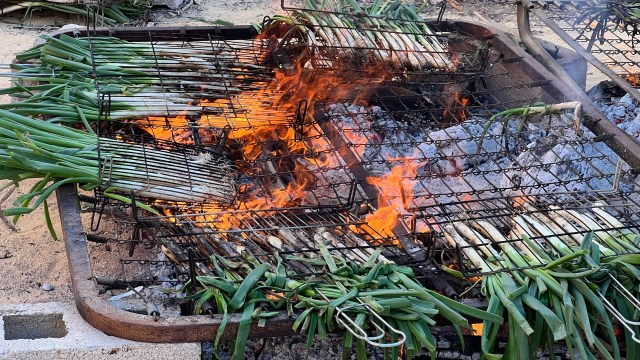
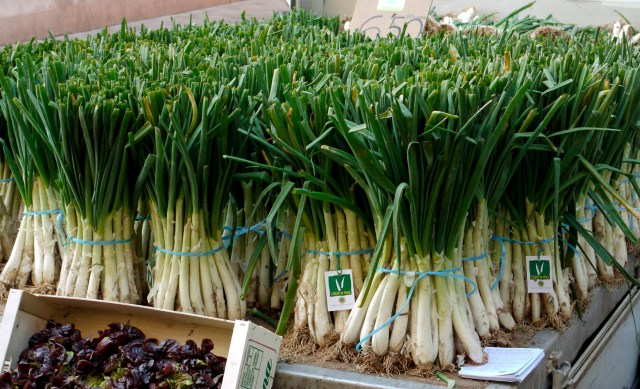
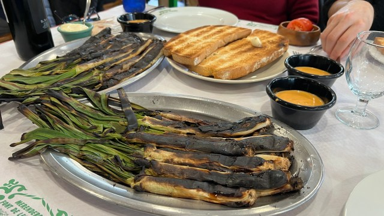
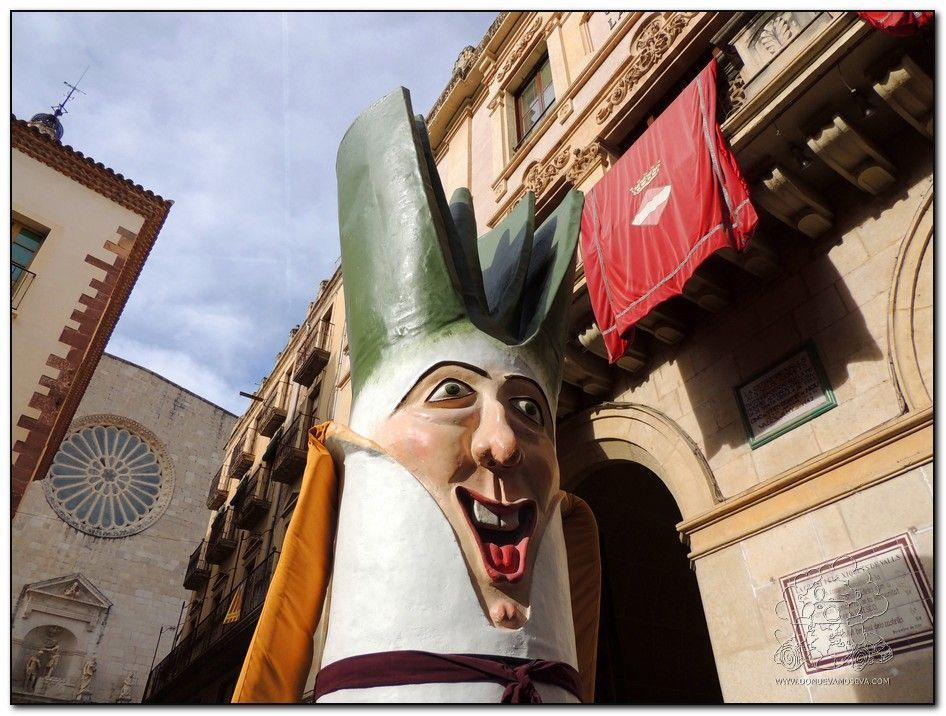

Una cebolla quemada, un gesto generoso y ciento treinta años de tradición
La historia del calçot empieza con un accidente. A finales del siglo XIX, en Valls, un agricultor conocido en el barrio como el Xat de Benaiges tenía en el fuego unas cebollas tiernas. Se le quemaron. En lugar de tirarlas, las peló, vio que por dentro estaban blandas y dulces, y se las comió. Después las preparó con una salsa improvisada que, con los años, evolucionaría hacia la salvitxada. Ese gesto cotidiano —tostar, pelar, mojar y comer— es considerado el origen de uno de los rituales gastronómicos más genuinamente catalanes que existen.
A principios del siglo XX, la calçotada ya era la comida de los domingos de invierno en Valls: grupos de amigos y familias se reunían en las masías y asaban los calçots sobre sarmientos de viña —que les dan ese sabor ligeramente ahumado e inconfundible—. La tradición empezó a salir del municipio a partir de los años 50, cuando la Penya de l'Olla —formada por artistas e intelectuales vallesanos— organizó calçotadas anuales e invitó a personalidades de Barcelona. Lo que era una comida de pueblo se convirtió en fenómeno catalán. Después, en fenómeno mundial.

Calçots a la brasa · El fuego vivo de sarmientos es parte esencial del sabor
Qué es exactamente un calçot y por qué no es simplemente una cebolleta
El calçot es una variedad de cebolla blanca que se cultiva mediante un proceso largo y preciso que dura más de un año. El nombre viene del catalán calçar: la operación de ir rodeando el tallo con tierra a medida que crece, para que la parte blanca se estire en busca de la luz y alcance entre 15 y 25 centímetros. Este proceso se repite dos o tres veces durante el cultivo. El resultado es un tallo blanco, tierno, con un punto dulce que se acentúa con la brasa y que no se encuentra en ninguna otra variedad.
La IGP Calçot de Valls, concedida en 1995 y constituida en consell regulador en 1996, garantiza el origen y la calidad del producto. Los calçots protegidos se reconocen porque están atados con hilo azul del que cuelga una etiqueta numerada con el nombre del productor. Se comercializan en manojos de 25 o 50 unidades. La temporada oficial va de noviembre a abril, con el momento de máxima calidad entre enero y marzo.


Salvitxada o romesco: el secreto mejor guardado de Valls
La discusión sobre si la salsa de los calçots es salvitxada o romesco es tan antigua como la propia calçotada y, dependiendo de con quién hables en Valls, puede durar más que la sobremesa. Técnicamente, el Corpus de la Cuina Catalana las trata como variaciones del mismo concepto: tomate y ajo escalibados, almendras y avellanas tostadas, pimiento, aceite, vinagre y sal. En la práctica, cada familia, cada masía y cada restaurante tiene su proporción, su orden de trituración y su ingrediente secreto. Nadie que viva en Valls te dará la receta completa. Lo comprobamos personalmente.
El calçot, el porró y los castellers: tres cosas nuestras que siempre me han fascinado. Salen de la tierra y me hacen mirar al cielo.
Bigas Luna · Cineasta barcelonès, gran defensor de la cultura catalana
Cómo se come un calçot: babero, porró y manos manchadas
Los calçots se asan directamente sobre sarmientos de viña encendidos hasta que las capas exteriores quedan negras y el interior queda tierno. Se envuelven en papel de periódico para mantener el calor mientras se sirven. El comensal coge el calçot por la parte verde, retira las capas quemadas con un gesto que ya es en sí mismo un ritual, y lo moja en la salvitxada antes de levantarlo por encima de la cabeza y dejarlo caer en la boca. No se hace de otra manera. Intentar comer un calçot con cubiertos es señal inequívoca de que eres turista.
Al babero y al porró de vino negro se suman las carnes a la brasa —llonganissa, cordero, costillas—, las alcachofas y patatas al caliu, las judías con ajo y perejil, y la crema catalana de postre. Una calçotada no es un aperitivo: es una comida completa de tres o cuatro horas, preferiblemente al aire libre, en la que la cocina la hace todo el mundo a la vez y nadie lleva reloj.

El gegant calçot de Valls · La fiesta también se vive en la calle, con castellers, gegants y música
La Gran Festa de la Calçotada: el último domingo de enero, Valls recibe el mundo
Desde 1982, el último domingo de enero Valls celebra la Gran Festa de la Calçotada. En 2026 fue su 44a edición. Entre 35.000 y 40.000 visitantes llegan ese día al municipio, procedentes de toda Cataluña, del resto de España y de países como Japón, Alemania y Francia. La plaça del Pati acoge el concurso más esperado: el de comer calçots, donde los participantes compiten durante 45 minutos para ver quién come más. El récord en 2025 fue de 195 calçots en ese tiempo. El ganador habitual, el barcelonés Adrià Wegrzyn, no pudo participar en 2026 por haberlo ganado trece veces.
El antropólogo que estudió la calçotada
Guillermo Soler, coordinador de El gran llibre de la calçotada (Cossetània), explica que el calçot no deja de ser "una cebolla de segundo año que se calza", pero que lo singular reside en su asociación con la celebración colectiva. "No conozco a nadie que vaya solo a comerse una calçotada." Soler señala que la calçotada "todavía puede seguir creciendo, porque no se trata de una moda puntual, sino que ha ido expandiéndose gradualmente desde los años 50". Y añade: "Siempre tendremos alguna excusa para juntarnos, celebrar algo y olvidarnos por un rato de las pantallas."
A veinte minutos de Tarragona: el calçot también es nuestro
El ámbito de la IGP Calçot de Valls incluye cuatro comarcas: Alt Camp, Baix Camp, Tarragonès y Baix Penedès. Dicho de otro modo: el calçot no es solo de Valls. Es del Camp de Tarragona. Muchos de los campos que producen calçots con denominación de origen están a pocos kilómetros de Reus, de Tarragona o de Cambrils. En temporada, el olor a sarmientos encendidos y calçots a la brasa impregna las masías del entorno de una manera que cualquier residente de la zona reconoce al instante.
Para los Gourmets de Tarragona, la calçotada es parte del paisaje gastronómico del invierno. Hemos compartido mesa con el calçot en más de una ocasión, y siempre confirma lo mismo: hay platos que no necesitan sofisticación para ser memorables. A veces basta con un fuego, unas manos manchadas de tizne y alguien al lado con quien compartirlo.
Fuentes consultadas: Festa Calçotada Valls, Visita Valls, El Confidencial Digital, Naturaki, Calçots Casa Fèlix, Gastronosfera, Huley Mantel, DóndeVamosEva, TwentyTu, Segre · Guillermo Soler / El gran llibre de la calçotada (Cossetània)
Más curiosidades del Camp de Tarragona
 Curiosidades
Curiosidades
Reus, París, Londres · La capital mundial del vermut
Del aguardiente al aperitivo más elegante de Europa. La historia de cómo Reus se convirtió en referencia mundial.
Leer → Curiosidades
Curiosidades
La coca amb cireres · El dulce que Reus regala por Corpus
Un pesador de harina, unas cerezas a punto de perderse y un gesto generoso. Así nació la tradición más dulce del Camp.
Leer →